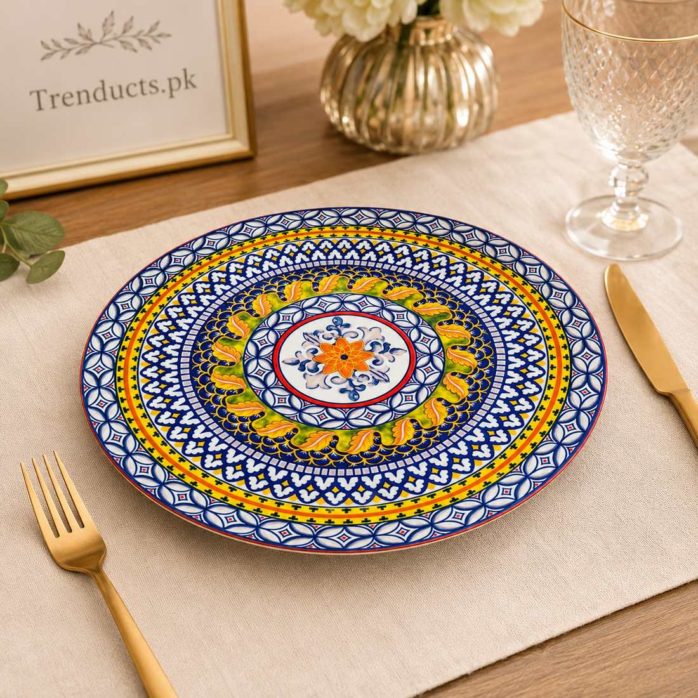
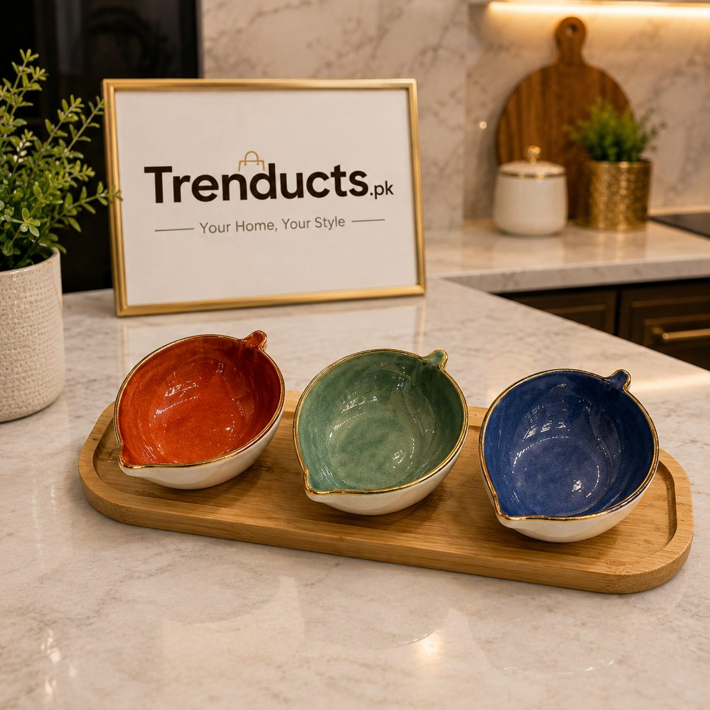

In many Pakistani homes, there is an unspoken rule: the good crockery lives in the showcase. It comes out for Eid, a rishta visit or when important relatives come to dinner, and the rest of the year the family eats from chipped or mismatched plates. Some of those guest sets have been in the showcase since a wedding twenty years ago and have hardly been used.
There is nothing wrong with keeping special pieces for special days. But it is worth thinking about what you really need, so that both daily meals and guest meals feel right.
Start with an honest count
Count the people who eat at home on a normal day, then add two or three for unexpected guests and breakages. That is your everyday plate count. Then think about your typical guest occasion. Is it six relatives for dinner, or forty people for a dawat? The answer decides whether you need a large guest set or simply a few nicer pieces to add to the everyday ones.
What everyday crockery must handle
Daily dishes get the hardest life. They go from stove to table, get scraped with spoons, washed by different hands and stacked quickly. For everyday use, look for:

- Plain or simple patterns that are easy to replace if one breaks.
- Sturdy ceramic or stoneware that handles daily washing.
- Plates with a slight rim so salan and daal do not run off.
- Bowls that work for both cereal in the morning and salan at night.
White or neutral ribbed sets are a smart choice, because they look clean and modern, suit every cuisine and make food look good.
What guest crockery adds
Guest crockery is about presentation. Patterned dinner plates, a matching dessert set and coordinated serving dishes make a dinner feel like an occasion. Bohemian, floral and gold-detailed designs photograph beautifully and impress guests.
The mix-and-match approach
You do not have to choose one or the other. A modern approach is to build a neutral everyday base and add a few statement pieces. For guests, set the table with your plain dinner plates and add patterned plates on top for starters, or use colourful dessert dishes for the sweet course. The table looks curated rather than matched, and you buy less overall.
Materials at a glance
Porcelain and bone china are elegant and fairly durable but cost more. Stoneware is heavy and sturdy, ideal for daily meals. Standard ceramic offers a good balance of price and looks. Melamine is light and unbreakable, useful for children and picnics, but not for the microwave. Opal glass is light, chip-resistant and popular for daily use.

Getting more from the showcase
If your guest set never leaves the showcase, consider using it more often. A Friday lunch with the good plates, or a family dinner on a birthday, means you enjoy what you have bought. Plates that are used regularly also get checked for chips and cleaned of dust.
Storage tips
Stack plates with a paper napkin between patterned or gold-rimmed pieces to prevent scratches. Store bowls nested, not piled with plates on top. Keep everyday pieces at waist height in the kitchen and guest pieces higher or in a separate cabinet. Wipe showcase pieces before use, as dust settles even behind glass.
Replacing pieces without starting over
Breakages are inevitable. Choose everyday designs that are commonly available, so you can replace one plate instead of buying a new set. For guest pieces, buy one or two spares at the start.
Building your collection
If you are updating your kitchen, consider one neutral daily set plus a few patterned pieces for guests. Trenducts.pk offers dinner sets, patterned dinner plates and dessert dishes in its dinnerware range, delivered across Pakistan.
Plates for living, not just for show
The best crockery is the kind you enjoy using. Build a practical daily set, add a few beautiful pieces, and let both come out to the table often.